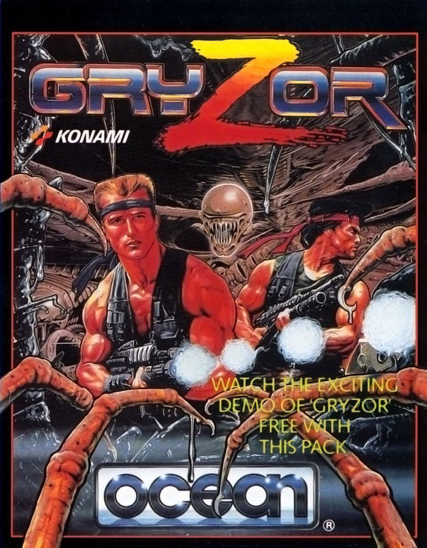
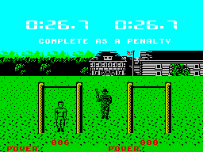
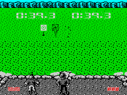

Combat School


{kind=link}

| Publisher: | Ocean |
| Price: | £7.95 Cassette, 14.95 Disk |
| Year: | 1987 |
| Source: | CRASH, Issue 48 |

The guys who get through the US Marines Corps’s combat school eat six Shredded Wheat for breakfast. And if you can join them and beat the time limit for completing seven gruelling tests in Ocean’s Combat School coin-op conversion, you’ll be a tough guy too — and there’s a top-secret antiterrorist mission waiting to be done.
Your training begins with an assault course: walls of different heights and an arm walk. A meter shows the muscular power you’re generating, and if you can keep it up it’s on to the next section, the first firing range.

Targets appear from the ground and remain in sight for just a few seconds — but at least 38 must be hit, blasted by moving a multidirectional cursor.
The next event is the ‘iron man’ race. Only a good running speed can see you successfully through rough country strewn with boulders, water hazards and bridges; then you swim across a fast-flowing river full of logs.
Now you’re exhausted — but the second firing range appears, and the challenge is to hit 95 robot tanks as they appear before you. From there it’s on to show your bicep supremacy in an arm-wrestling contest.
This man-to-man trial of muscles is different from all others at the school because even if you fail, you’re allowed to carry on training. Normally the instructor’s more ruthless — fail any other test and you’re out.

And now your tingling arm must be brought under control, for accuracy is once more required on the third shooting range. As on the first, targets pop up for just a few seconds — but it’s more complicated this time, because you have to avoid hitting red targets. Get one by accident, and a whole screen of targets (and potential points) is lost to you.
The final and hardest stage of Combat School puts you into unarmed combat with an instructor. You can throw punches and kicks, leap in to attack and leap away again, and if you hit your opponent often enough and quickly enough you are the victor. But of course the opposite also applies — and if you fail this ultimate challenge you cannot graduate.
For all that, there’s some pity left in those Marine instructors. If you can’t complete an event or amass enough points within its individual time limit, after the indignity of a few chin-ups you can return to the course.
And if you do extra well in an event, bonus points do wonders for your prospects of promotion when it’s all over.
But it’s never all over for a US Marine — if you manage to graduate from the school, all your newly-acquired skills are needed on a mission to rescue a hostage from an American embassy.
CRITICISM
“Combat School — the coin-op, the game, the sweat, the blisters! This is a faithful conversion of the arcade original as it’s almost impossible to complete (perhaps a few POKEs could deal with that!). Some of the stages are so grueling it would be easier to do the tests in real life than in the computer version! The graphics couldn’t be better and the vivid colour (completely clashless), characters and backgrounds are all excellent. On the 128K version, there’s excellent sound and the added luxury of not having to reload after a few levels. Combat School is brilliant on the 48K and the best 128K game around.”
NICK ... 91%
“This is one of the wickedest packages around and guaranteed to destroy your joystick. There’s plenty of variety, from swimming rivers to shooting tanks, and every level’s playable and very addictive — you’ll be surprised how much effort it can take to move a sprite! Combat School is one of the best games I’ve ever played.”
DAVE ... 93%
“There are very few games on the Spectrum that actually make you sweat while playing — Imagine’s Hyper Sports is one, and Combat School (from the same software conglomerate) the latest. If you’ve played the arcade game and thought it could never be done on the Spectrum, think again. This is the machine’s most successful arcade conversion yet. The graphics are superb, and the 128K sound is more than just impressive; it’s some of the best around, with tunes playing even while you’re struggling in the events! Two-player mode makes the game very competitive, almost adding a new dimension, and indeed Combat School is the ideal Christmas present for weaklings and strong men alike.”
PAUL ... 94%
COMMENTS
| Joysticks: | Cursor, Kempston, Sinclair |
| Graphics: | Excellent, detailed, no clash |
| Sound: | Stirring tunes |
| Options: | Two-player option; definable keys; demo of Gryzor — another Konami coin-op conversion imminent from Ocean — on 128K tape. But one minus point: multiload is necessary on the 48K Spectrum. |
| General rating: | A hugely addictive challenge of speed, strength and coordination that looks and sounds good too |
| Presentation: | 91% |
| Graphics: | 94% |
| Playability: | 93% |
| Addictive qualities: | 92% |
| Overall: | 93% |